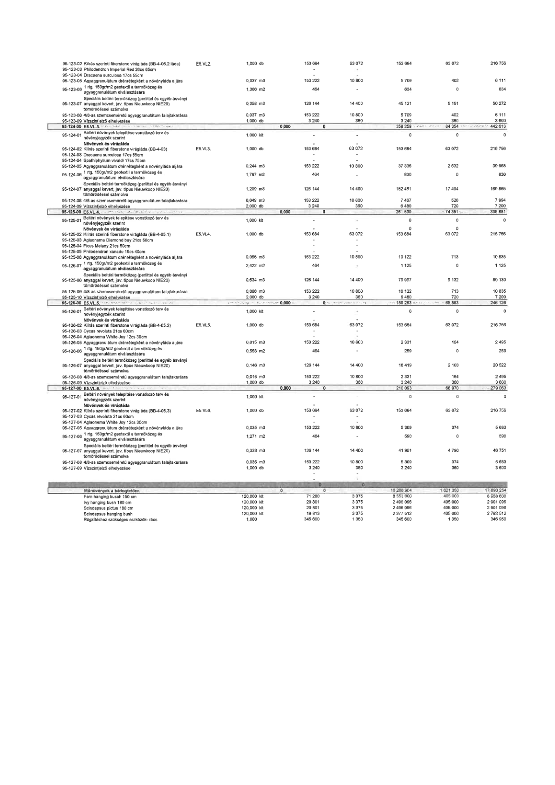

| Tétel | Menny. | Egys. | Anyag e.ár (net HUF) | Díj e.ár (net HUF) | Anyag összesen (net HUF) | Díj összesen (net HUF) | Anyag+Díj összesen (net HUF) |
|---|---|---|---|---|---|---|---|
| 95-123-02 Kiírás szerinti fiberstone virágláda (BB-4-06.2 láda) E5.VL.2. | 1,000 | db | 153 684 | 63 072 | 153 684 | 63 072 | 216 756 |
| 95-123-03 Philodendron Imperial Red 28cs 65cm | - | - | 0 | 0 | 0 | 0 | 0 |
| 95-123-04 Dracaena surculosa 17cs 55cm | - | - | 0 | 0 | 0 | 0 | 0 |
| 95-123-05 Agyaggranulátum drénrétegként a növényláda aljára | 0,037 | m3 | 153 222 | 10 800 | 5 709 | 402 | 6 111 |
| 95-123-06 1 rtg. 150gr/m2 geotextil a termőközeg és agyaggranulátum elválasztására | 1,366 | m2 | 464 | 0 | 634 | 0 | 634 |
| 95-123-07 Speciális beltéri termőközeg (perlittel és egyéb ásványi anyaggal kevert, jav. típus Nieuwkoop NIE20) tömörödéssel számolva | 0,358 | m3 | 126 144 | 14 400 | 45 121 | 5 151 | 50 272 |
| 95-123-08 4/8-as szemcseméretű agyaggranulátum talajtakarásra | 0,037 | m3 | 153 222 | 10 800 | 5 709 | 402 | 6 111 |
| 95-123-09 Vízszintjelző elhelyezése | 1,000 | db | 3 240 | 360 | 3 240 | 360 | 3 600 |
| 95-124-00 E5.VL.3. | NaN | NaN | 0 | 0 | 358 259 | 84 354 | 442 613 |
| 95-124-01 Beltéri növények telepítése vonatkozó terv és növényjegyzék szerint | 1,000 | kit | 0 | 0 | 0 | 0 | 0 |
| Növények és virágláda | NaN | NaN | 0 | 0 | 0 | 0 | 0 |
| 95-124-02 Kiírás szerinti fiberstone virágláda (BB-4-03) E5.VL.3. | 1,000 | db | 153 684 | 63 072 | 153 684 | 63 072 | 216 756 |
| 95-124-03 Dracaena surculosa 17cs 55cm | - | - | 0 | 0 | 0 | 0 | 0 |
| 95-124-04 Spathiphyllum vivaldi 17cs 75cm | - | - | 0 | 0 | 0 | 0 | 0 |
| 95-124-05 Agyaggranulátum drénrétegként a növényláda aljára | 0,244 | m3 | 153 222 | 10 800 | 37 336 | 2 632 | 39 968 |
| 95-124-06 1 rtg. 150gr/m2 geotextil a termőközeg és agyaggranulátum elválasztására | 1,787 | m2 | 464 | 0 | 830 | 0 | 830 |
| 95-124-07 Speciális beltéri termőközeg (perlittel és egyéb ásványi anyaggal kevert, jav. típus Nieuwkoop NIE20) tömörödéssel számolva | 1,209 | m3 | 126 144 | 14 400 | 152 461 | 17 404 | 169 865 |
| 95-124-08 4/8-as szemcseméretű agyaggranulátum talajtakarásra | 0,049 | m3 | 153 222 | 10 800 | 7 467 | 526 | 7 994 |
| 95-124-09 Vízszintjelző elhelyezése | 2,000 | db | 3 240 | 360 | 6 480 | 720 | 7 200 |
| 95-125-00 E5.VL.4. | NaN | NaN | 0 | 0 | 261 530 | 74 351 | 335 881 |
| 95-125-01 Beltéri növények telepítése vonatkozó terv és növényjegyzék szerint | 1,000 | kit | 0 | 0 | 0 | 0 | 0 |
| Növények és virágláda | NaN | NaN | 0 | 0 | 0 | 0 | 0 |
| 95-125-02 Kiírás szerinti fiberstone virágláda (BB-4-05.1) E5.VL.4. | 1,000 | db | 153 684 | 63 072 | 153 684 | 63 072 | 216 756 |
| 95-125-03 Aglaonema Diamond bay 21cs 50cm | - | - | 0 | 0 | 0 | 0 | 0 |
| 95-125-04 Ficus Melany 21cs 50cm | - | - | 0 | 0 | 0 | 0 | 0 |
| 95-125-05 Philodendron xanadu 19cs 40cm | - | - | 0 | 0 | 0 | 0 | 0 |
| 95-125-06 Agyaggranulátum drénrétegként a növényláda aljára | 0,066 | m3 | 153 222 | 10 800 | 10 122 | 713 | 10 835 |
| 95-125-07 1 rtg. 150gr/m2 geotextil a termőközeg és agyaggranulátum elválasztására | 2,422 | m2 | 464 | 0 | 1 125 | 0 | 1 125 |
| 95-125-08 Speciális beltéri termőközeg (perlittel és egyéb ásványi anyaggal kevert, jav. típus Nieuwkoop NIE20) tömörödéssel számolva | 0,634 | m3 | 126 144 | 14 400 | 79 997 | 9 132 | 89 130 |
| 95-125-09 4/8-as szemcseméretű agyaggranulátum talajtakarásra | 0,066 | m3 | 153 222 | 10 800 | 10 122 | 713 | 10 835 |
| 95-125-10 Vízszintjelző elhelyezése | 2,000 | db | 3 240 | 360 | 6 480 | 720 | 7 200 |
| 95-126-00 E5.VL.5. | NaN | NaN | 0 | 0 | 180 263 | 65 863 | 246 126 |
| 95-126-01 Beltéri növények telepítése vonatkozó terv és növényjegyzék szerint | 1,000 | kit | 0 | 0 | 0 | 0 | 0 |
| Növények és virágláda | NaN | NaN | 0 | 0 | 0 | 0 | 0 |
| 95-126-02 Kiírás szerinti fiberstone virágláda (BB-4-05.2) E5.VL.5. | 1,000 | db | 153 684 | 63 072 | 153 684 | 63 072 | 216 756 |
| 95-126-03 Cycas revoluta 21cs 60cm | - | - | 0 | 0 | 0 | 0 | 0 |
| 95-126-04 Aglaonema White Joy 12cs 30cm | - | - | 0 | 0 | 0 | 0 | 0 |
| 95-126-05 Agyaggranulátum drénrétegként a növényláda aljára | 0,015 | m3 | 153 222 | 10 800 | 2 331 | 164 | 2 495 |
| 95-126-06 1 rtg. 150gr/m2 geotextil a termőközeg és agyaggranulátum elválasztására | 0,558 | m2 | 464 | 0 | 259 | 0 | 259 |
| 95-126-07 Speciális beltéri termőközeg (perlittel és egyéb ásványi anyaggal kevert, jav. típus Nieuwkoop NIE20) tömörödéssel számolva | 0,146 | m3 | 126 144 | 14 400 | 18 419 | 2 103 | 20 522 |
| 95-126-08 4/8-as szemcseméretű agyaggranulátum talajtakarásra | 0,015 | m3 | 153 222 | 10 800 | 2 331 | 164 | 2 495 |
| 95-126-09 Vízszintjelző elhelyezése | 1,000 | db | 3 240 | 360 | 3 240 | 360 | 3 600 |
| 95-127-00 E5.VL.6. | NaN | NaN | 0 | 0 | 210 093 | 68 970 | 279 063 |
| 95-127-01 Beltéri növények telepítése vonatkozó terv és növényjegyzék szerint | 1,000 | kit | 0 | 0 | 0 | 0 | 0 |
| Növények és virágláda | NaN | NaN | 0 | 0 | 0 | 0 | 0 |
| 95-127-02 Kiírás szerinti fiberstone virágláda (BB-4-05.3) E5.VL.6. | 1,000 | db | 153 684 | 63 072 | 153 684 | 63 072 | 216 756 |
| 95-127-03 Cycas revoluta 21cs 60cm | - | - | 0 | 0 | 0 | 0 | 0 |
| 95-127-04 Aglaonema White Joy 12cs 30cm | - | - | 0 | 0 | 0 | 0 | 0 |
| 95-127-05 Agyaggranulátum drénrétegként a növényláda aljára | 0,035 | m3 | 153 222 | 10 800 | 5 309 | 374 | 5 683 |
| 95-127-06 1 rtg. 150gr/m2 geotextil a termőközeg és agyaggranulátum elválasztására | 1,271 | m2 | 464 | 0 | 590 | 0 | 590 |
| 95-127-07 Speciális beltéri termőközeg (perlittel és egyéb ásványi anyaggal kevert, jav. típus Nieuwkoop NIE20) tömörödéssel számolva | 0,333 | m3 | 126 144 | 14 400 | 41 961 | 4 790 | 46 751 |
| 95-127-08 4/8-as szemcseméretű agyaggranulátum talajtakarásra | 0,035 | m3 | 153 222 | 10 800 | 5 309 | 374 | 5 683 |
| 95-127-09 Vízszintjelző elhelyezése | 1,000 | db | 3 240 | 360 | 3 240 | 360 | 3 600 |
| Műnövények a bádogtetőre | NaN | NaN | 0 | 0 | 16 268 904 | 1 621 350 | 17 890 254 |
| Fern hanging busch 150 cm | 120,000 | kit | 71 280 | 3 375 | 8 553 600 | 405 000 | 8 958 600 |
| Ivy hanging bush 180 cm | 120,000 | kit | 20 801 | 3 375 | 2 496 096 | 405 000 | 2 901 096 |
| Scindapsus pictus 180 cm | 120,000 | kit | 20 801 | 3 375 | 2 496 096 | 405 000 | 2 901 096 |
| Scindapsus hanging bush | 120,000 | kit | 19 813 | 3 375 | 2 377 512 | 405 000 | 2 782 512 |
| Rögzítéshez szükséges eszközök- rács | 1,000 | NaN | 345 600 | 1 350 | 345 600 | 1 350 | 346 950 |
